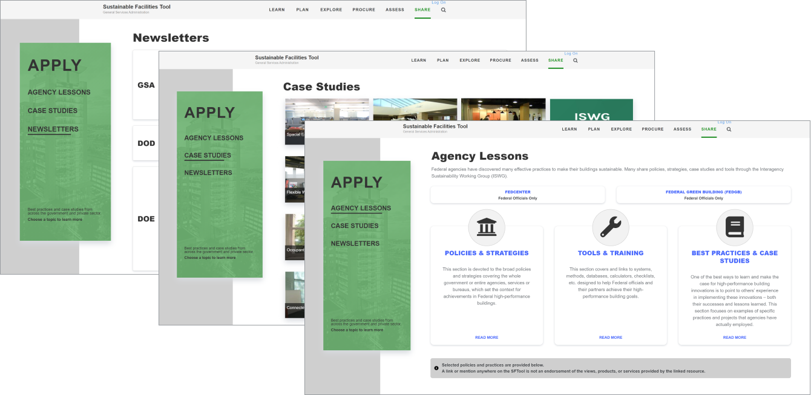

Sustainable Facilities Tool
GSA's one-stop website to learn Sustainable Building and Procurement best practices.
The General Services Administration (GSA) aids the Federal Government in making sustainable decisions regarding the procurement of high-performance, healthy buildings. With each high-performance building, this benefits taxpayers and employees alike by conserving resources, better air quality and lowered utility costs.
SFTool, a website, was created to inspire those to learn about sustainability and take action.
Role
Wireframing
Visual Design
Code Implementation
Client
General Service Administration
Contracted by Noblis
Duration
6 Weeks
Problem Statement
While the Sustainability Facilities Tool has been operating for the past several years, the design has been slow to change. There had been issues concerningsite organization , and stakeholders requested a more modern feel.
How can we best promote sustainability within facilities purchasing and present the information in clear, concise manner?
Team
While working with Noblis, a nonprofit organization that delivers advisory solutions to the federal government, I acted as a contractor to GSA. Due to budget constraints, I was working as the sole designer and developer on this effort. While this gave me creative freedom, I was responsible for all aspects of this design from creating the user journey to high-fidelity wireframing to coding my own prototype. I solicited feedback from another designer within my greater team to vet my designs and create a collaborative environment.
Process
Discovery
Client Meetings and requirement gathering to determine use cases and current pain points.
Wireframe
Low fidelity prototypes using Powerpoint. High fidelity prototype using HTML/CSS.
Validation
Presentation of mockups to Clients and gathering feedback to determine final outcome.
Implementation
Developed the website using HTML/CSS, Bootstrap 4 and Javascript
Discovery
The stakeholders had a clear idea of the content they wanted. Since this was a public Federal Government website, it needed to be comply with accessibility needs. I conducted research on accessibility standards to better understand potential users. My target audience was mostly the stakeholders in question, so interviewing them and understanding their needs allowed me to gain further insight on their pain points.
Through several iterations and stakeholder feedback, I found:
- The new section needed to match the look and feel of other upgraded pages.
- With busy schedules, users wanted information at a glance.Scrolling down the page was the least preferable option.
- Users were frequently on the go, so the site must be accessible from phone, tablet and laptop.
Challenges
Since the website was over 10 years old, it had undergone various phases of redesign by several different engineers and companies. This led to a lack of consistency across the website - it lacked a style guide, basic layouts and unified color choices. With limited resouces, I had my work cut out for me.
Wireframes & Validation
A simple wireframe had been completed during the inital stakeholder meeting using PowerPoint. This was done rapidly and mostly focused on the information architecture and hierarchy of pages. The stakeholders wanted to surface areas they had on their site that were hidden and nested under several layers and pages. Originally, it took over 10 clicks to navigate to these pages.

Apply Low-Fidelity Wireframe

Case Study Low-Fidelity Wireframe
The left navigation was a direct result of these conversations, as it fully highlights the three core areas of this new section of the site. The introduction of the left navigation cut down the number of user clicks by over 50%. Due to security and budget concerns, all low-fidelity wireframes were done via PowerPoint and on whiteboards.
Implementation
After gathering the information from the stakeholders and existing development team, I created a high-fidelity wireframe. Most of the information was extracted from the existing website. Content for new pages was provided by the stakeholders.
Apply Landing Page

Before

After
The original landing page lacked a central focal point for the user. With the split screen view, the user is presented with double the information, which may be overwhelming. This caused the user to spend more time on the page, searching for information.
The goal was to simplify the landing page, so the user can navigate to the desired information without having to spend extra time searching. After iterating with the stakeholders, these three Agency Lessons became the core of this page. The three panels indicates that each is a clickable item, and the icons give the users an idea about what each section contains.
The lack of scrolling on this page ensures that all information is either presented immediately on the page, or through accessible links.
Case Studies Page

Before

After
The case studies page was originally a very long scrollable list. There was no search feature on this page so finding a specific case study meant scrolling and paging through several pages. Adding this as an item on the left navigation bar cuts down on the number of user clicks by 70%. Displaying the items in a grid allows the user to quickly scan all the case studies without needless scrolling.
Since government computers tend to have smaller screens, the main concern here was finding a way to visually present the information and eliminate excess scrolling. The black overlay expands to the full width of the picture when hovered over, and thus retains the ability to display detailed text, without taking excessive vertical space.
Lessons Learned
Throughout the process of redesigning this area of the website, it was tempting to create custom, modern layouts with new sleek colors. The ultimate challenge was creating a unified theme amongst the hodgepodge of pages.
I found that reusing existing patterns and limiting colors not only reduced risk of sensory overload for the users, but also was easier on the developer’s end (in this case, me) to build. That being said, there is still a lot of improvement to be made on SFTool.
SFTool still has several other pages that need to be redesigned to fit this new, modern look. If given the opportunity, I’d like to create a unified style-guide and design system that would inform design decisions to implement a unified, consistent style.
Thanks for exploring Sustainability Facilities Tool! Hopefully you enjoyed this case study.